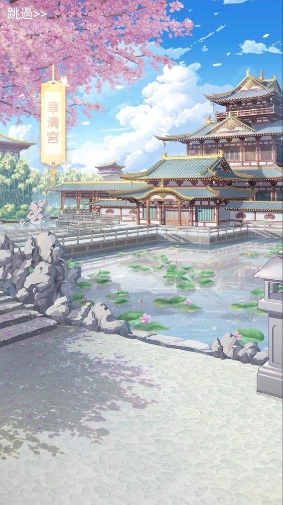
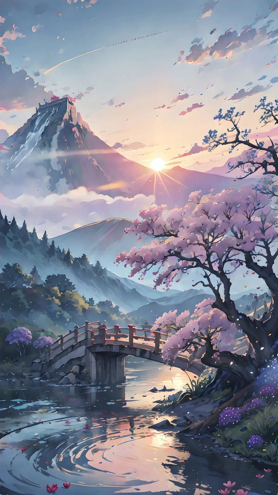

Le festival
祭り
祭り
Le Festival des films d’animation Japonais de Belfort 2025 se distingue par son caractère unique et immersif, en faisant bien plus qu’une simple vitrine pour l’animation japonaise. Ce qui fait son originalité, c’est avant tout la plongée totale dans la culture nippone qu’il propose. Les visiteurs peuvent non seulement visionner des films, mais aussi s’immerger dans l’art et la tradition japonaise à travers des ateliers de calligraphie, des démonstrations culinaires authentiques, et des stands mettant en valeur des produits artisanaux. Cette dimension culturelle élargie offre une expérience multisensorielle qui enrichit l’univers de l’animation.
Le festival se démarque également par une programmation riche et variée qui s’adresse à tous les publics. Des classiques du cinéma d’animation japonais, comme ceux du Studio Ghibli, côtoient des films indépendants et expérimentaux, rarement montrés en Europe. Des projections interactives, où les bandes-son sont jouées en live par des orchestres, apportent une dimension unique à certains films, permettant de les redécouvrir autrement. Le festival ne se limite pas aux projections et s’ouvre également aux jeunes talents grâce à des rétrospectives, des avant-premières, et des hommages aux grands maîtres de l’animation.
Une autre spécificité du festival réside dans son engagement à favoriser les échanges interculturels entre la France et le Japon. En invitant des réalisateurs, des animateurs et des artistes de renom, le festival devient une plateforme pour partager les savoir-faire, créer des liens entre professionnels, et montrer comment l’animation japonaise influence et inspire la scène internationale. Des conférences, des masterclasses et des ateliers collaboratifs permettent d’encourager le dialogue entre les créateurs européens et japonais, renforçant ainsi la dimension internationale de l’événement.
Directrice du Festival
Programmateur
Responsables Invités
Responsable Technique
Responsable Marketing
Responsable Activités
Responsable Finances
Responsable Acceuil